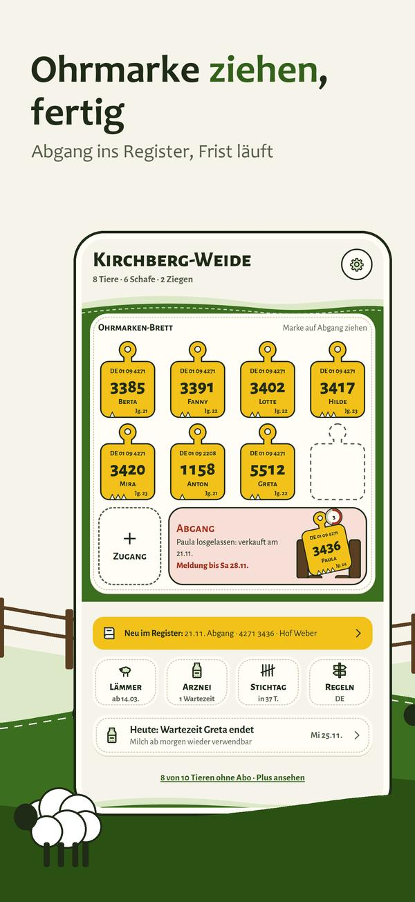
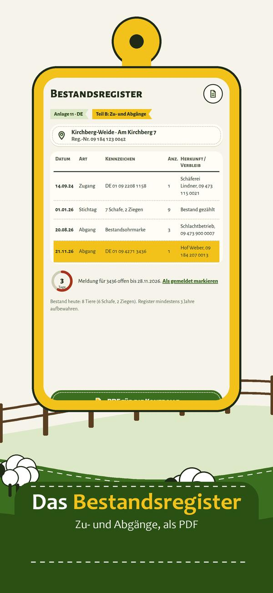
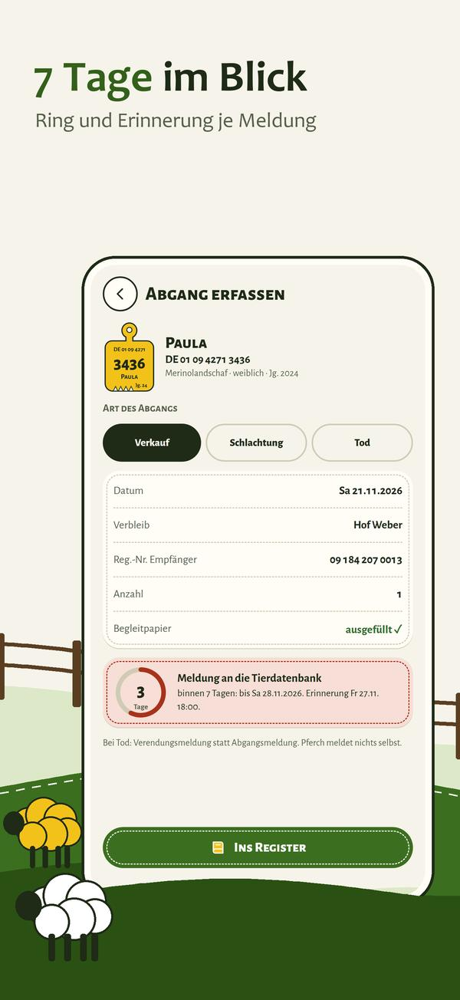
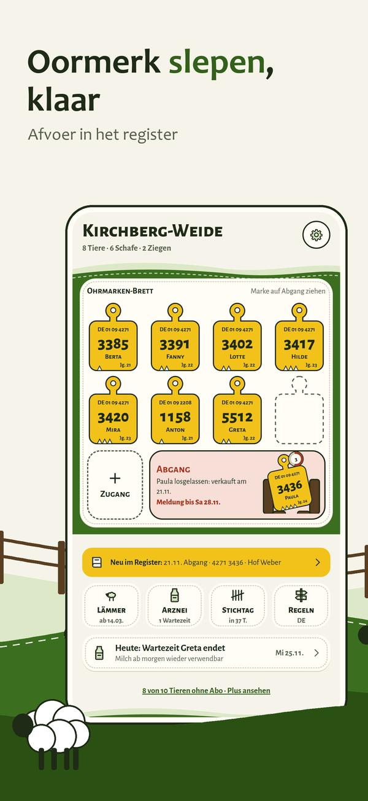
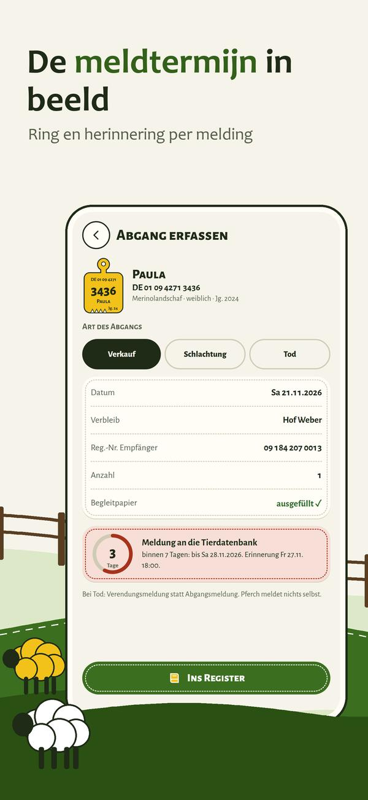
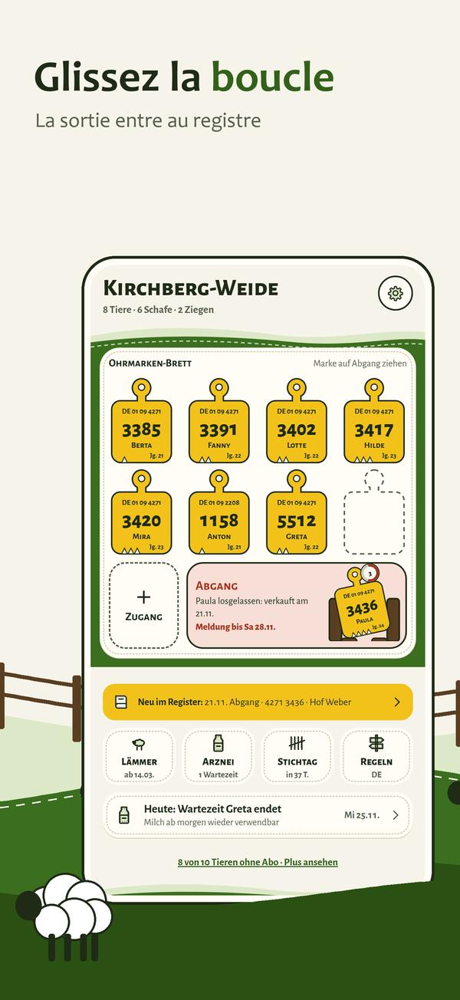
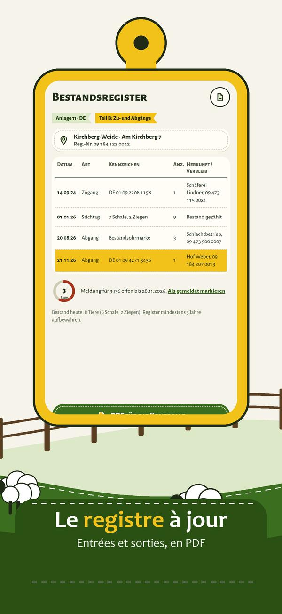
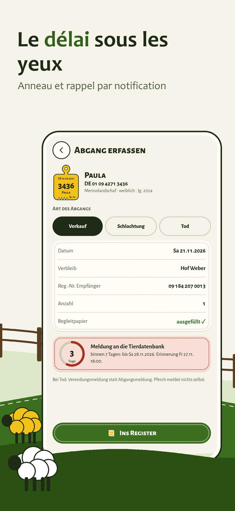

Pferch ist das Herdenbuch für kleine Schaf- und Ziegenhaltungen. Jede Ohrmarke liegt auf einem Brett; ziehen Sie ein Tier auf „Abgang“, steht die Zeile im Bestandsregister und die 7-Tage-Frist für die Meldung läuft sichtbar mit. Dazu Bestandsbuch mit Wartezeiten, Lammliste, Pflegetermine, Weideplan und die Zählung zum 1. Januar.



Ohrmarken-Brett: jedes Tier mit Nummer, Name und Jahrgang
Zu- und Abgang mit einem Zug, direkt im Bestandsregister
Meldefrist von 7 Tagen als Ring mit Erinnerung
Bestandsbuch für Arzneimittel mit Wartezeit vom Beleg
Lammliste mit erwarteter Ablammzeit je Mutterschaf
Termine für Klauenpflege, Entwurmung und Schur
Weideplan auf der Karte und Zählung zum Stichtag
PDF für die Kontrolle; Vorlagen für Deutschland, Österreich, Niederlande, Frankreich, Schweiz
Pferch is het kuddeboek voor kleine schapen- en geitenhouders. Elk oormerk hangt op een bord; sleep een dier naar „Afvoer” en de regel staat in het register, met de meldtermijn zichtbaar erbij. Met medicijnlogboek en wachttijden, lammerlijst, verzorgingsafspraken, weideplan en de jaarlijkse telling.


Oormerkbord: elk dier met nummer, naam en jaargang
Aan- en afvoer met één beweging, direct in het register
Meldtermijn als ring met herinnering
Medicijnlogboek met wachttijd van het recept
Lammerlijst met verwachte aflamperiode per ooi
Afspraken voor klauwverzorging, ontworming en scheren
Weideplan op de kaart en telling op de peildatum
PDF voor controle; sjablonen voor Nederland, Duitsland, Oostenrijk, Frankrijk, Zwitserland
Pferch est le carnet de troupeau des petits élevages ovins et caprins. Chaque boucle est posée sur un tableau ; glissez un animal vers « Sortie » et la ligne entre au registre, avec le délai de notification visible. Avec carnet sanitaire et délais d’attente, liste d’agnelage, soins, plan de pâturage et recensement annuel.



Tableau des boucles : chaque animal avec numéro, nom et année
Entrées et sorties d’un geste, directement au registre
Délai de notification en anneau avec rappel
Carnet sanitaire avec délai d’attente de l’ordonnance
Liste d’agnelage avec période attendue par brebis
Rappels pour parage, vermifuge et tonte
Plan de pâturage sur la carte et recensement
PDF pour le contrôle ; modèles pour la France, l’Allemagne, l’Autriche, les Pays-Bas, la Suisse